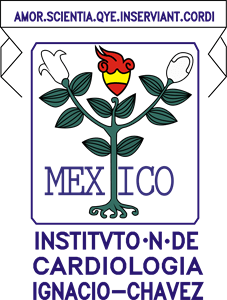
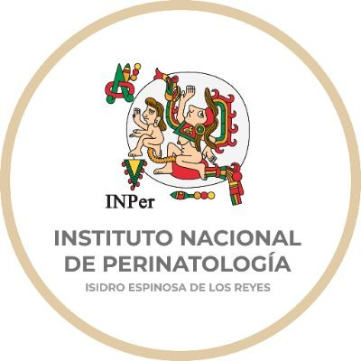

En México existen distintas Instituciones de salud que facilitan la vida y salud en general de la población.
Varias instituciones son dedicadas a distintos grupos de personas como por ejemplo a los trabajadores, a los niños
o incluso personas con distintos problemas como por ejemplo, personas con enfermedades respiratorias mayores.
Las distintas instituciones son:
Institución
Nombre completo
Funcionalidad
Página oficial
INP
Instituto Nacional de Pediatría
El instituto Nacional de Pediatría tiene la misión de desarrollar modelos de atención a la infancia
y a la adolesencia a través de la investigación científica básica, cl
INER
Instituto Nacional de Enfedmedades Respiratorias
El Instituto Nacional de Enfedmedades Respiratorias tiene por misión mejorar la salud respiratoria
de los individuos y de las comunidades mediante la investigación, la atención medica especializada y la
formación de recursos humanos
INR
Instituto Nacional de Rehabilitación
El Instituto Nacional de Rehabilitación que se dedica principalmente a la prevención, diagnóstico,
tratamiento y rehabilitación de las distintas discapacidades mediante la investigación y atención medica especializada.
INMEGEN
Instituto Nacional de Medicina Genomica
El Instituto Nacional de Medicina Genómica se encarga planear y dirigir las distintas investigaciones cientificas
en medicina Genomica y áreas relacionadas a través del desarrollo de proyectos de investigación básica, clínica, medica
y genómica. También reciben la ayuda y se vinculan con otras instituciones similares tanto en México como en el
extranjero.
INC 
Instituto Nacional de Cardiología
El Instituto Nacional de Cardiología tiene por objetivo aliviar las enfermedades cardiovasculares mediante la
investigación científica, educación profesional superior y una atención médica moderna con cualidad humanitaria.
INPS
Instituto Nacional de Psiquiatría
El Instituto Nacional de Psiquiatría se encarga de mejorar la salud mental de la población mediante la investigación
multidisciplinaria de excelencia, la atención medica especializada y la formación de recursos humanos en los principios
de calidad y calidez.
INDG
Instituto Nacional De Geriatría
El Instituto Nacional De Geriatría tiene como misión el impulsar el envejecimiento saludable en la población
mexicana a través del conocimiento científico y la provisión de servicios de salud dirigidos a las personas
mayores.
INSP
Instituto Nacional de Salud Pública
El Instituto Nacional de Salud Pública tiene la misión de contribuir a la equidad social y a la plena realización del
derecho a la protección de la salud mediante la generación y difusión de conocimiento y la innovación en investigación
multidisciplinaria.
INPer 
Instituto Nacional de Perinatología
El Instituto Nacional de Perinatología tiene como objetivo determinar las pautas a seguir en Salud Reprpoductiva y
Periantal con estandares bioéticos y de calidad.
INCan
Instituto Nacional de Cancerología
El Instituto Nacional de Cancerología se encarga de la generación de estrategias para controlar el
cáncer y reducir su impacto como problema de salud pública en México.
Estas son las instituciones más recalcables y las más importantes del sector salud en México, auqnue existen más instituciones
que estan dedicadas a ciertos grupos vulnerables o a la investigación de distintos temas científicos y de salud.